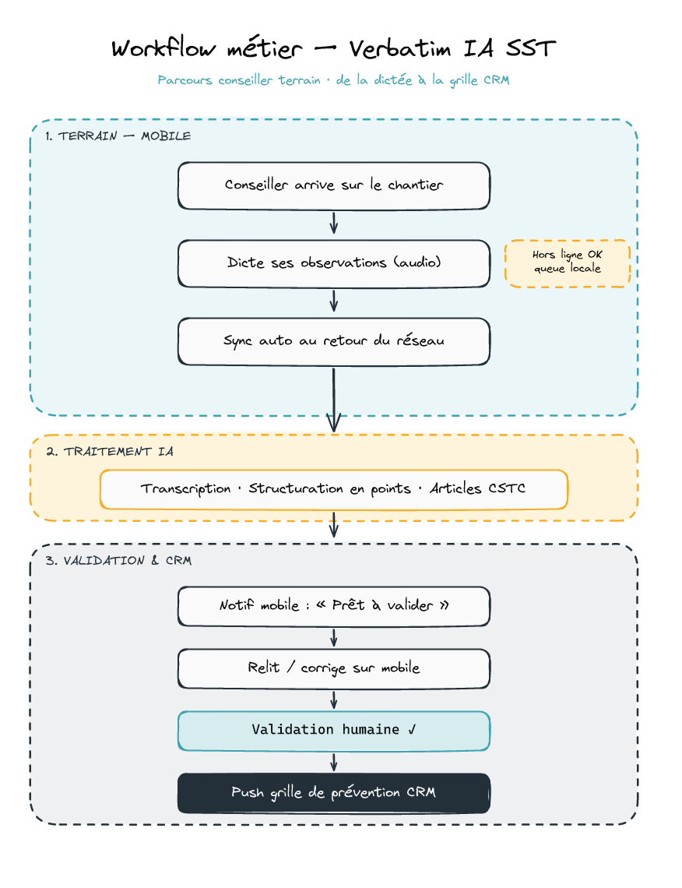

Vos conseillers dictent leurs observations sur le chantier. L'IA structure, identifie les articles du Code de sécurité, et la grille de prévention de votre CRM se remplit toute seule.
De
Thomas Richard
Automation Builders
Pour
ACQ
Geneviève St-Onge
Date
27 avril 2026
Validité 30 jours
Délai
6 semaines
à compter de la signature
01Ce qu'on a compris de votre besoin
À l'Association de la construction du Québec, vos conseillers en prévention SST se déplacent sur les chantiers et doivent consigner leurs observations dans la grille de prévention de votre CRM. La saisie sur le terrain ralentit le travail et limite la qualité des observations.
Vous voulez un processus de verbatim IA dans lequel le conseiller dicte ses observations, l'IA les structure en points conformes aux règles SST construction, associe les articles du CSTC pertinents (par exemple l'article 3.25.3 lorsqu'il est question de silice), puis renseigne directement la grille de prévention dans votre CRM.
02Comment la solution fonctionne au quotidien
Le conseiller dicte son observation sur le chantier
Il utilise une application de notes vocales déjà éprouvée pour enregistrer l'audio. Pas de saisie clavier sur le terrain. Pas d'apprentissage nouveau pour le conseiller.
L'observation est centralisée et traitée par l'IA
L'audio est transcrit en français québécois, puis structuré automatiquement en points distincts. L'IA reconnaît les sujets SST et associe les articles du CSTC pertinents (silice, hauteur, échafaudage, EPI, etc.).
Le conseiller relit, corrige et valide depuis son téléphone
Une application installable sur l'écran d'accueil lui présente la fiche prête à valider. Il ajuste si besoin, puis confirme d'un geste.
La grille de prévention du CRM se remplit automatiquement
Une fois validée, l'observation est poussée dans la grille de votre CRM. Le conseiller passe à l'observation suivante.

Schéma — Parcours du conseiller terrain, de la dictée à la grille CRM
03Ce que ça apporte concrètement
Du temps gagné sur chaque visite
Plus de saisie au clavier sur le téléphone. Le conseiller parle, l'IA transcrit et structure.
Des observations plus complètes
Sans contrainte de frappe, le conseiller décrit ce qu'il voit en détail. La qualité de la grille s'améliore.
Une conformité réglementaire renforcée
L'IA associe systématiquement les bons articles du CSTC. Moins d'oublis, moins d'erreurs.
04Ce que vous obtenez (périmètre)
Inclus
Cadrage fonctionnel et spécifications
Application installable pour le conseiller (consultation, validation, correction)
Mise en place de l'infrastructure (hébergement Canada)
Workflow IA complet (transcription, structuration, association des articles CSTC)
Indexation des articles CSTC dans la base de connaissance
Connexion à votre CRM pour remplir la grille de prévention
Tests, recette, formation des conseillers
Documentation utilisateur et technique
30 jours de support après livraison
Non inclus
Abonnement VPS et services tiers à la charge du client
Contenu CSTC à lister par le client. Récupération du contenu depuis sources publiques (LégisQuébec, CNESST) sur la base de cette liste
Maintenance évolutive au-delà des 30 jours de support (forfait à discuter)
Version anglaise (proposée en v2)
Mode hors ligne robuste (proposé en option v1.5 après tests v1)
05Investissement
Forfait global
Verbatim IA SST — version 1 complète
14 000 CAD
HT · hors taxes (TPS / TVQ)
Ce forfait inclut l'intégration de votre CRM sous condition d'API REST documentée. Si l'audit révèle un cas spécifique, un avenant est proposé.
Modalités de paiement
30 % à la signature
40 % à la livraison de la solution (fin S4)
30 % à la recette finale
06Échéancier
Livraison cible : 6 semaines à compter de la signature.
Sem.
Phase
S1
Cadrage, mise en place infrastructure, audit du CRM
S2-S3
Indexation des articles CSTC, workflow IA, base de données
S2-S4
Application conseiller (en parallèle)
S5
Connexion CRM, tests bout-en-bout
S6
Recette, formation, mise en production
Une livraison plus rapide est envisageable selon les conditions du contrat.
07Coûts récurrents (à charge du client)
Ces coûts couvrent les services tiers nécessaires au fonctionnement de la solution. Ils sont indépendants du forfait ci-dessus.
Service
Rôle
CAD / mois
Hébergement infrastructure (VPS Canada)
Application + base de données + orchestrateur
15 à 35
Otter.ai (plan Business)
Capture audio + transcription
~ 24
Claude API (Anthropic)
Structuration et association CSTC
50 à 150
Total mensuel estimé
90 à 210
08Garanties
30j
Support inclus
Correction de bugs pendant 30 jours après la livraison.
↺
Code source remis
Pas de verrou propriétaire. Vos équipes ou un autre prestataire peuvent reprendre la solution.
CA
Données au Canada
Hébergement permanent au Québec sur infrastructure self-hosted.
Prochaine étape
Échangeons avant de signer, Geneviève
Plutôt que de figer le devis sans dialogue, je préfère qu'on prenne le temps de valider ensemble.
Présentation détaillée de la solution dans le contexte de l'ACQ
Démonstration des composants clés (transcription, structuration IA, association CSTC)
Audit rapide de votre CRM pour confirmer l'intégration
Réponses à toutes vos questions techniques et fonctionnelles
Ajustement du périmètre et du devis si vos besoins évoluent pendant l'échange
Pour celles et ceux qui veulent comprendre la stack technique sous-jacente. La compréhension de ces termes n'est pas nécessaire pour valider la soumission.
PWA (Progressive Web App)
Application web qui s'installe sur l'écran d'accueil du téléphone (iOS et Android) et fonctionne comme une app native, sans passer par l'App Store ni le Play Store. Mises à jour instantanées, accès au micro et aux notifications.
Otter.ai
Service tiers de notes vocales et transcription automatique. Le conseiller utilise l'app Otter pour enregistrer son observation. Le transcript est ensuite récupéré automatiquement par notre solution via l'API Otter.
Supabase (self-hosted)
Plateforme open source qui regroupe base de données PostgreSQL, authentification, stockage de fichiers et règles de sécurité. Hébergée sur un VPS au Québec, vos données ne quittent pas le Canada.
n8n (self-hosted)
Orchestrateur de workflows open source. C'est lui qui pilote la chaîne : récupération du transcript, appel à Claude, association des articles CSTC, écriture dans votre CRM.
Claude API (Anthropic)
Modèle d'intelligence artificielle qui structure le transcript en points et identifie les articles du CSTC pertinents.
RAG (Retrieval-Augmented Generation)
Technique qui permet à l'IA de s'appuyer sur une base documentaire spécifique. Ici, la base contient les articles du Code de sécurité pour les travaux de construction. L'IA y cherche les références pertinentes avant de structurer l'observation.
pgvector
Extension PostgreSQL qui stocke les articles CSTC sous une forme exploitable par l'IA pour la recherche de similarité.
API REST
Standard d'échange de données entre applications. Si votre CRM expose une API REST documentée, l'intégration est directe. Sinon, un audit est nécessaire pour proposer une alternative.
VPS (Virtual Private Server)
Serveur virtuel hébergé chez un prestataire (OVHcloud Beauharnois ou équivalent au Québec). C'est l'infrastructure sur laquelle tournent Supabase et n8n.